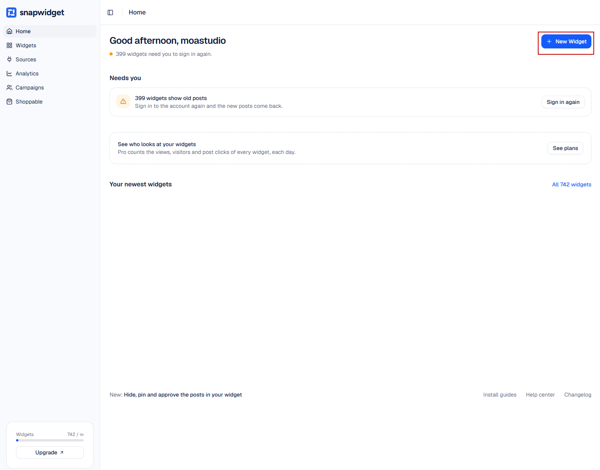
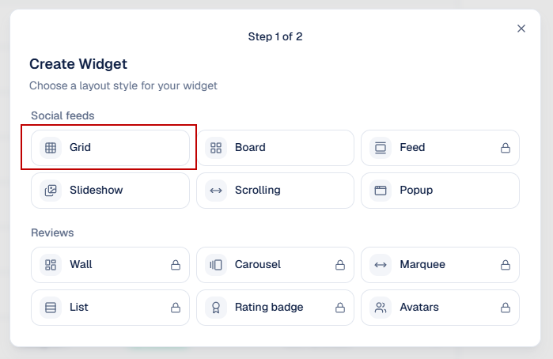
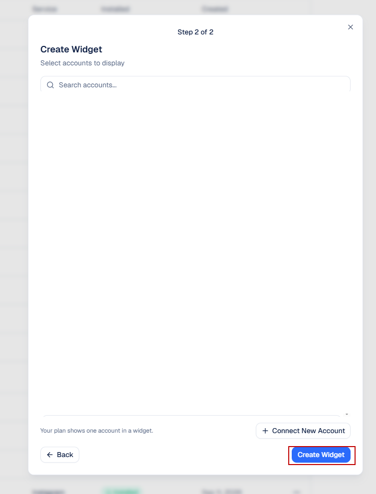
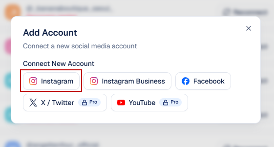
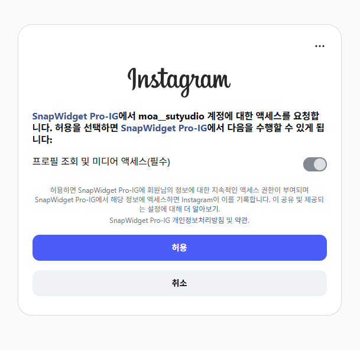
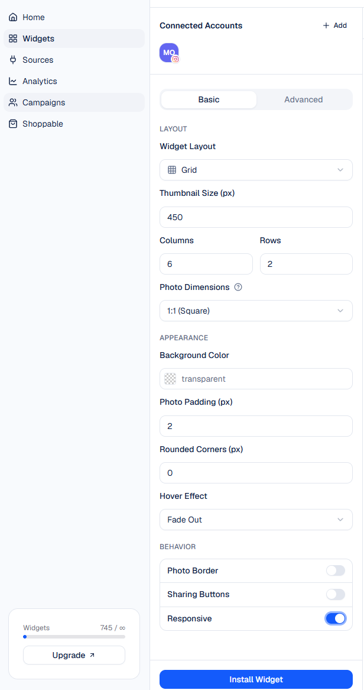
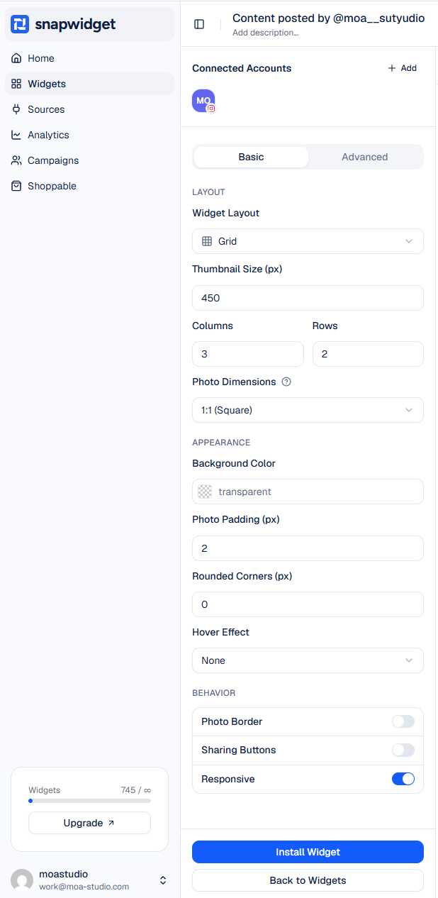
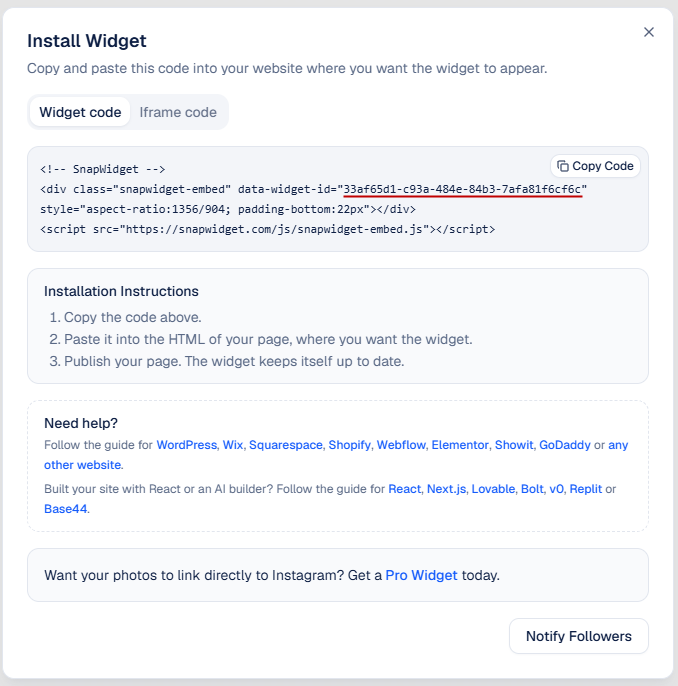
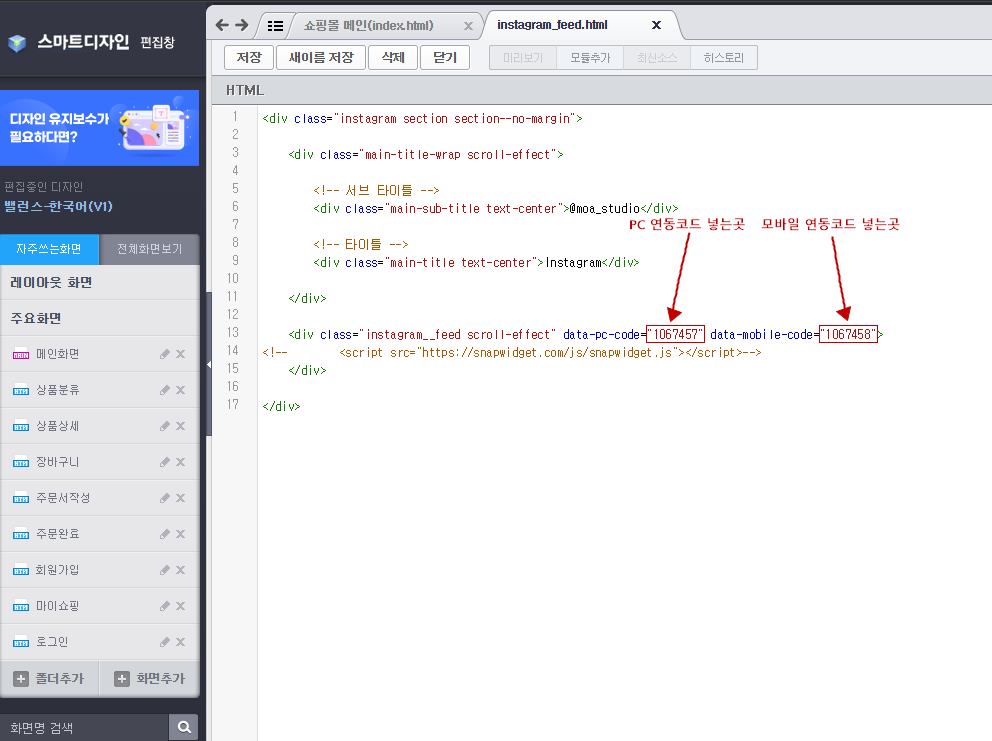

스냅위젯에서 위젯 만들기
스냅위젯(snapwidget.com)에 로그인한 뒤 새 위젯을 생성합니다.
스냅위젯 바로가기 ↗홈 화면에서 [New Widget] 클릭
스냅위젯(snapwidget.com)에 로그인하면 보이는Home 화면 오른쪽 위의 파란색 + New Widget 버튼을 눌러주세요.

레이아웃은 [Grid] 선택
Step 1 of 2 창이 열리면 Social feeds 항목에서 Grid를 선택해주세요.

인스타그램 계정 연결
위젯에 보여줄 인스타그램 계정을 스냅위젯에 연결합니다. 처음 한 번만 하면 되고, 이후에는 연결된 계정을 선택만 하면 됩니다.
[Connect New Account] 클릭
Step 2 of 2 창에서 연결할 계정을 고르는 화면이 나옵니다. 아직 연결된 계정이 없다면 아래쪽 + Connect New Account를 눌러주세요.

- 이미 연결된 계정이 있으면 목록에서 계정을 선택한 뒤 Create Widget을 눌러주세요.
- 무료 플랜은 한 위젯에 계정 1개만 표시할 수 있습니다.
[Instagram] 선택
Add Account 창에서 Instagram을 클릭해주세요.

인스타그램 접근 권한 [허용]
인스타그램 로그인 후 아래와 같은 권한 요청 화면이 나타납니다. '프로필 조회 및 미디어 액세스' 항목이 켜져 있는 것을 확인하고 [허용]을 눌러주세요.

- 연결하려는 쇼핑몰 인스타그램 계정으로 로그인해야 합니다. (다른 계정으로 로그인되어 있지 않은지 확인해주세요.)
- 허용이 완료되면 위젯 편집 화면으로 자동 이동하며, 상단의 Connected Accounts에 계정이 표시됩니다.
위젯 설정 후 코드 복사
위젯의 모양(열·행 개수 등)을 설정하고, 쇼핑몰에 붙여넣을 연동 코드를 복사합니다.
위젯 설정하기 (PC용 / 모바일용)
위젯 편집 화면에서 Basic 탭의 값을 설정합니다. 가장 중요한 항목은 Columns(열)와 Rows(행)이며, PC용과 모바일용을 각각 다르게 설정해 두 개의 위젯을 만듭니다.


| 설정 항목 | PC용 | 모바일용 |
|---|---|---|
| Widget Layout | Grid | Grid |
| Thumbnail Size (px) | 450 | 450 |
| Columns (열) | 6 | 3 |
| Rows (행) | 2 | 2 |
| Photo Dimensions | 1:1 (Square) | 1:1 (Square) |
| Background Color | transparent | transparent |
| Photo Padding (px) | 2 | 2 |
| Rounded Corners (px) | 0 | 0 |
| Hover Effect | Fade Out | None |
| Responsive | ON | ON |
[Install Widget] 클릭 → 연동 코드 확인
설정이 끝나면 화면 왼쪽 아래의 파란색 Install Widget 버튼을 누릅니다. 아래와 같은 Install Widget 창이 열립니다.

- 코드 중
data-widget-id="…"의 따옴표 안, 위 캡처에서 빨간 밑줄이 그어진 값이 연동 코드입니다. - 구디자인은 코드 전체를 복사하지 않고, 이 연동 코드 값만 사용합니다. (STEP 4에서 입력 방법 안내)
- PC용 위젯과 모바일용 위젯은 코드 값이 서로 다릅니다. 각각 확인해서 메모해 두세요.
디자인 편집창에서 연동 코드 입력
구디자인은 배너 매니저가 아니라, 디자인 편집창의 인스타그램 소스 안에 위젯 코드를 직접 입력합니다. 코드 전체가 아니라 주소 끝의 코드 값(UUID)만 넣으면 됩니다.
'연동 코드' 값만 복사하기
STEP 3의 Install Widget 창에서 data-widget-id="…" 따옴표 안의 값이 연동 코드입니다. 이 값만 드래그해서 복사(Ctrl + C)해주세요.
<div class="snapwidget-embed" data-widget-id="33af65d1-c93a-484e-84b3-7afa81f6cf6c" …></div>
- 위 예시에서는 33af65d1-c93a-484e-84b3-7afa81f6cf6c 부분만 복사합니다. 따옴표(
")는 포함하지 않습니다. - PC용 위젯과 모바일용 위젯은 코드 값이 서로 다르니, 각각 따로 복사해 두세요.
Iframe code탭에서는…/embed/뒤의 값이며, 같은 값입니다.
디자인 편집창에서 instagram_feed.html 열기
- 쇼핑몰 관리자 > 디자인 편집창을 열어주세요. ('디자인 편집창 열기' 안내 페이지 바로가기)
- 메인 화면의 인스타그램 영역인 instagram_feed.html 파일을 열어주세요.
PC · 모바일 연동 코드 수정 후 저장
소스 중간의 data-pc-code, data-mobile-code 따옴표 안에 8번에서 찾은 값을 각각 넣어주세요.

<div class="instagram__feed scroll-effect"
data-pc-code="PC용 위젯 코드"
data-mobile-code="모바일용 위젯 코드">
<!-- <script src="https://snapwidget.com/js/snapwidget.js"></script>-->
</div>
- data-pc-code → PC용 위젯의 코드 (화면 너비 768px 이상에서 노출)
- data-mobile-code → 모바일용 위젯의 코드 (화면 너비 768px 미만에서 노출)
- 수정 후 상단의 [저장] 버튼을 눌러주세요.
" ")와 그 밖의 코드는 지우거나 바꾸지 마세요. 따옴표 안의 값만 바꿔야 합니다. 이전 값(숫자)이 남아 있지 않은지도 확인해주세요.마지막으로 확인해주세요
- data-pc-code에는 PC용, data-mobile-code에는 모바일용 코드 값이 들어갔나요?
- 쇼핑몰 메인 페이지를 PC와 모바일에서 각각 열어 인스타그램 게시물이 보이는지 확인해주세요. (바로 안 보이면 새로고침 후 다시 확인)